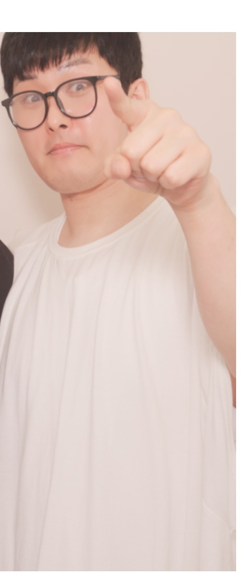
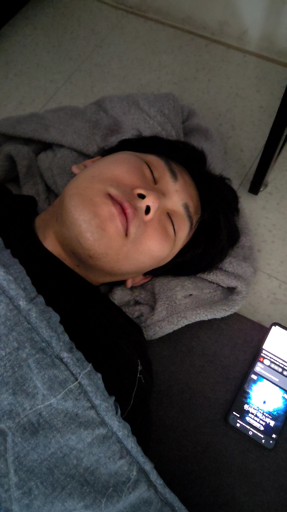
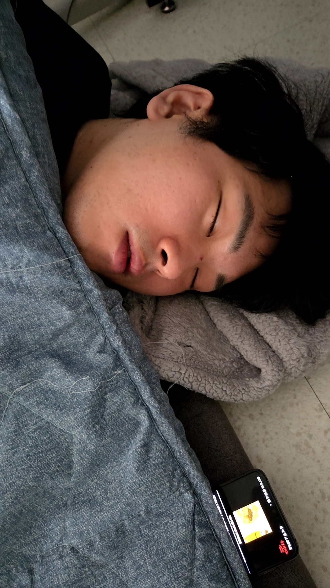

긴급!!
사람을 찾습니다
길바닥 아무 데서나 자는 노숙자(?)를 찾습니다



정현우 (자칭 직장인)
| 인상착의 | 검은 뿔테 안경, 흰 티 또는 검은 티. 잘 때는 안경 벗음 |
|---|---|
| 주요 서식지 | 바닥, 이불 위, 담요 위 — 등만 대면 어디든 |
| 소지품 | 휴대폰 1대 (항상 머리맡에 켜진 채로 방치) |
| 특이사항 | 눕는 순간 3초 안에 잠듦. 입 살짝 벌리고 잠. 깨어 있을 땐 손가락으로 사람 가리키는 버릇 있음 |
| 마지막 목격 | 회색 담요를 베개 삼아 숙면 중 |
이 사람을 발견하시면 절대 깨우지 마시고 이불을 덮어 주신 뒤 조용히 연락 주세요.
억지로 깨우면 "안 잤는데?"라고 주장할 수 있으니 주의 바랍니다.
억지로 깨우면 "안 잤는데?"라고 주장할 수 있으니 주의 바랍니다.
사례금: 삼각김밥 1개
※ 본 전단지는 장난입니다. 실제 신고는 하지 마세요 😴
정현우 목격 제보
정현우 목격 제보
정현우 목격 제보
정현우 목격 제보
정현우 목격 제보
정현우 목격 제보
정현우 목격 제보
정현우 목격 제보